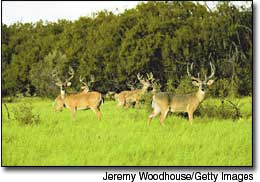
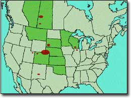
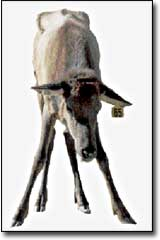

Wasting illness may travel via game farms.
The first U.S. mad cow was diagnosed just last year, but for more than 30 years, deer in certain parts of this country are known to have been afflicted by a similar fatal neurological ailment called chronic wasting disease (CWD). Twenty years ago, the same illness was diagnosed in elk.
In the past nine years, possibly as a consequence of game farm practices, CWD in deer and elk has spread from two states to 10 more and two Canadian provinces. Hunters in certain areas now are being urged to have their deer and elk kills tested.
For 30 years, CWD in the wild was centered in portions of northeast Colorado and southeast Wyoming. Since 1997, it has turned up in the wild in Nebraska, South Dakota, Wisconsin, Illinois, New Mexico, Utah and Saskatchewan, too.
Game farms also have had the disease appear, and many suspect that animal sales between farms, as well as escapees, helped transport the disease.
From 1996 to 2002, CWD was discovered on game farms in Saskatchewan, Alberta, Colorado, Kansas, Minnesota, Montana, Nebraska, Oklahoma and South Dakota. Overall, there are about 12,000 deer and elk farms in the U.S. and Canada.
Several years ago, three young people - two hunters and one woman who ate venison hunted by her father - died of the human form of CWD, Creutzfeldt-Jakob Disease (pronounced Croytz-feld Yawkob), and scientists are wondering if humans could be infected by eating venison from sick deer or elk.
The jury's out on this all-important question, though research is ongoing. Dr. Patrick Bosque, a neurologist with the hospital Denver Health, has been studying CWD for many years. He says, "The most prudent assumption is that, at some low rate, if enough people consume enough chronic-wasting-disease meat, some people might get a chronic-wastinglike disease. But we really don't know for sure.'
First, mad sheep
Nearly 300 years ago, European herders noticed a new affliction among their sheep. Some of the animals suddenly would become disorientated and nervous, grind their teeth and bite at their legs and feet. Many displayed a maddening itch, rubbing themselves bloody against fence posts. Within six months, they would stop eating and die. Herders dubbed the disease "scrapie.'
Today, microscopic examination of scrapie-infected sheep brains reveals the calling card of this family of diseases: extremely tiny ruptures or holes in the brain cells. Imagine a normal, solid section of brain cells and, next to it, a scrapie-infected section that looks strangely swiss-cheesed. Both mad cow (bovine spongiform encephalopathy or BSE) and CWD have this similar abnormal brain-cell pathology.
In 1977, Elizabeth Williams, a graduate student in veterinary medicine, discovered these miniscule holes; in 1980, she published her findings. Williams was trying to figure out why deer and elk were dying at the Foothills Wildlife Research Facility, now operated by the Colorado Division of Wildlife, near Fort Collins, Colo.
In the 1960s, Foothills and three similar Colorado research facilities had embarked on several studies involving wild deer and elk; when the projects were completed, the animals were released back into the wild.
Soon after the studies began, however, the deer began dying from a mysterious ailment. Many slobbered excessively, became listless and stopped interacting with other animals. Some would tremble and become uncoordinated. Usually, they would grow emaciated and waste away, their ribs protruding painfully before they died.
The area encompassing Foothills also was home to sheep with scrapie, which has existed in North America since 1947; some researchers think scrapie from the sheep was contracted by the deer and elk. Michael Miller, a Colorado Division of Wildlife veterinarian at the Foothills facility, says the disease may have existed in the wild even earlier, and then spread from infected animals brought in for study to the closely confined captive animals. Other experts say not enough proof exists to support either idea.
Williams, now a professor of veterinary science at the University of Wyoming and a leading CWD researcher, says today the disease is present in "about 40,000 square miles of Colorado, Nebraska and Wyoming. The known CWD-affected area took a big jump in 2002-2003, moving farther to the west and north in Wyoming." And the rate of infection is picking up, too, Williams says. Tests done in the 1980s in Colorado estimated less than 1 percent of elk and 2 percent or less of deer had CWD; today, in pockets of Colorado and Wyoming, the average infection rate in deer is 7 percent to 8 percent and, in a few areas, more than 15 percent have tested positive.
Captive Victims
According to Valerius Geist, professor emeritus of environmental science at the University of Calgary, there is no more efficient way to spread a wildlife disease than by transporting infected animals to disease-free areas. A respected wildlife biologist and author of numerous books on deer and elk biology, Geist says the trade in game farm animals has spread CWD into the wild across North America. "Deer are notorious for getting in and out of these farms," he says, noting fences fall down or are breached by severe weather, and gates are left open. At fence lines, wild animals can have nose-to-nose contact with their fenced-in counterparts.
Game farm animals also are confined at much higher concentrations than in the wild, Geist says, and this concentration allows diseases like chronic wasting to magnify. In the 1990s, he adds, game-farmed elk introduced another disease, bovine tuberculosis, into Canadian cattle and other animals, a development that has cost Canadian taxpayers and consumers millions of dollars.
In 1996, Saskatchewan discovered its first game farm animal with CWD, an elk. By 2001, the province had 29 game farms under quarantine, and eventually, nearly 8,000 elk were slaughtered, more than 100 of which tested positive for CWD.
George Luterbach, chief veterinarian for the western branch of the Canadian Food Inspection Agency and one researcher involved in the elk situation, says, "We think we traced back most of the chronic wasting disease exposures to a single elk from South Dakota." Later, CWD was found on the South Dakota farm where the elk was raised. Luterbach says he thinks this single South Dakota elk brought the disease to the first infec- ted Saskatchewan game farm, that then distributed the disease into other game farm operations through buying and selling animals.
In 2000, Saskatchewan also recorded its first wild deer with CWD, and Darrel Rowledge, director of a Calgary conservation group called the Alliance for Public Wildlife, says it was no coincidence that CWD was found in the wild a few years after being confirmed on game farms. Given that the prions (misfolded, nerve cell-killing proteins) that cause CWD are very difficult to destroy and the disease is always fatal, historical and scientific records should reveal a pre-1960 presence in the wild in North America, but they don't. So, Rowledge says, the disease was localized in Colorado until infected game farm animals dispersed it more widely.
'Scientists knew that privatization, domestication and commercialization of wildlife were going to cause horrendous disease problems," Rowledge says, "but many state legislatures and agricultural agencies legalized game farms in the 1970s and 1980s, anyway. There was this presumption that [game farmers] should be allowed to exist until it was proven that they were doing something wrong."
Marching east
In February 2002, Wisconsin shocked the wildlife world when its Department of Natural Resources (DNR) announced that three deer killed by hunters the previous November had tested positive for CWD. This was the first known incidence of the disease east of the Mississippi River.
The three animals were killed near Mount Horeb, in southwestern Wisconsin, about 20 miles west of Madison, the state capital. Wisconsin subsequently embarked on a plan to kill off as many deer as possible in the surrounding 960-square-mile area. Since then, Wisconsin has identified 320 infected deer, most killed and tested during deer-hunting seasons. Just south of the Wisconsin border in Illinois, 30 more infected deer were identified between November 2002 and December 2003.
No one knows for sure how CWD jumped over 800 miles, from Colorado to Wisconsin. But, according to DNR secretary Scott Hassett, several possibilities exist, including infected deer [being] brought into the Mount Horeb area and released; infected deer escaping from a deer farm; hunter-harvested deer brought back from the West and carcass remains being left on the landscape; and CWD prions fed to wild deer in deer food or mineral blocks. "People would have been unaware that CWD was present in all of the above scenarios," Hassett says, "yet these situations all have something in common - a human activity that poses the risk of unknowingly introducing a devastating disease."
"I wouldn't eat an animal from an area with chronic wasting disease unless it had been tested."
- Dr. Patrick Bosque
At the time CWD was discovered in the state, more than 700 Wisconsin deer and elk farms were holding more than 16,000 animals. A 2000 series of investigative reports by this writer in the Madison, Wis., weekly newspaper, Isthmus, revealed some of those farms had imported more than 350 elk from game farms in Western states where CWD is found in the wild or from other farms with ties to game farms where stock had tested positive for the disease.
In September 2003, a deer with CWD was identified on a Wisconsin game farm, and by January of this year, 16 Wisconsin game farms were under CWD quarantines.
Victims in every arena
'We were always certain that the science would show we are not the source of this problem, that we are as much a victim of this disease as anyone else," says Gary Nelson, who owns a deer farm near Fence, Wis. Nelson also is president of the Whitetails of Wisconsin Association, an industry group that represents 200 of the state's 487 deer farmers. Another 350 Wisconsin game farmers raise elk or exotic deer. (Game farms raise deer and elk for paid hunting, meat and antler velvet, which is sold to exotic markets.)
Nelson says Wisconsin game farmers very much wanted to keep chronic wasting out of the state, and worked with Wisconsin agricultural officials to devise a CWD program four years ago. That program was put into effect under emergency authority after CWD was found in the state and is now standard operating procedure for all Wisconsin game farmers. Among the regulations, every dead deer or elk that leaves a game farm must be tested, no matter how it died.
He says game farms could have introduced CWD to Wisconsin, but the vast majority of infected animals - more than 300 - have been found in the wild. Less than 20 infected deer and elk out of nearly 6,000 tested since 2002 have been discovered on Wisconsin game farms. "Yes, we have it on game farms," he says, "but if it originated here, we would've discovered it rampant on Wisconsin game farms. And we haven't."
Elk appear the least susceptible to CWD, with mule deer (Western cousin of the white-tailed deer) next, followed by the white-tails, which are considered the most susceptible and the most responsible for spreading the illness. The exact route of infection between animals isn't known, but Colorado's Miller says it appears to be introduced orally. The possibility is that infected deer and elk somehow "shed" infected prions, passing them on to other animals through activities like feeding together, touching noses or stepping in each others" feces and urine. Currently, most scientists say the disease is fatal.
Management By Eradication
In Wisconsin, with deer densities of up to 70 animals per square mile, wildlife officials worry CWD could devastate the entire herd. Initially, the Wisconsin DNR wanted to eradicate all deer in the area with the disease; then, the agency shifted to a more practical, massive reduction effort via increased hunting. The aim is to slow the spread of infection.
Yet many Wisconsin citizens oppose the DNR's plan. One group, called CAIDS or Citizens Against Irrational Deer Slaughter, argues the mass kill plan is worse than the disease itself. The group has enlisted landowners willing to prohibit hunting on their properties for the cause.
Veterinarian John Barnes, a CAIDS organizer, says many healthy deer will be slaughtered needlessly. Barnes also thinks a deer kill would deprive future wild deer generations of potentially CWD-resistant genes, which could go a long way towards providing natural protection against CWD in the future.
So far, the only plan in Wisconsin, and Colorado, is to kill more deer. Tom Hauge, chief of the Wisconsin DNR's Wildlife Division, says new "intensive harvest zones" likely will be in place for this year's hunt, but he adds, "We are focused on eradicating the disease, not the deer.'
In Colorado and Wyoming, individual hunters can have their deer and elk tested for CWD. In Colorado, the cost is $15; in Wyoming, it's $25. Other states don't yet offer testing to individuals, though they are sampling for the disease in areas where CWD-infected animals have been found; in Wisconsin, mandatory sampling is under way in areas with known CWD-infected deer or elk.
Federal Assistance?
John Stauber, food safety activist and co-author of Mad Cow U.S.A.: Can the Nightmare Happen Here? (Common Courage, 1997), says he thinks the federal government needs to take a leading role in fighting CWD. "We need a major and well-funded scientific investigation to determine exactly how widespread chronic wasting disease, mad cow and scrapie are in North America," he says, noting only the federal government has the resources and regulatory control to conduct such work. In May 2002, Rep. Scott McInnis of Colorado's 3rd District held hearings on CWD and last year introduced a bill to create an interagency plan to deal with the disease. In 2003, nearly $13 million in federal funds also was given to states to help fight CWD, and the U.S. Department of Agriculture is working on a national management plan, too. Meanwhile, the single case of mad cow in Washington state caused President Bush to ask for an additional $60 million in fiscal year 2005 for mad cow surveillance and research. The difference in federal responses, Stauber says, reflects a large blind spot at top governmental levels. "Chronic wasting disease is still seen as a hunting industry, game farm or natural resources management problem, and very much a state issue. I think it's part of a much bigger national TSE (Transmissible Spongiform Encephalopathy, a disease category that includes mad cow, CWD and scrapie) problem, and needs to be treated that way.'
Brian McCombie lives in Wisconsin and writes about wildlife and environmental issues.
Is Venison Safe to Eat?
Chronic wasting disease (CWD), scrapie, mad cow and the human Creutzfeldt-Jakob Disease are Transmissible Spongiform Encephalopathies or TSEs, in which a normal brain cell protein called "the prion protein" builds up in a misfolded form that kills nerve cells.
Creutzfeldt-Jakob symptoms are similar to Alzheimer's, and include memory loss and depression, followed by rapidly progressive dementia and death, usually within a year after symptoms appear. The lag time between contracting the disease and death is not yet known.
Although Creutzfeldt-Jakob Disease is rare, the deaths of three young people from the disease caught the attention of the Centers for Disease Control and Prevention (CDC) because all three - two hunters, from Utah and Oklahoma, and a woman from Maine who ate hunted venison as a child - were younger than 30 when they first displayed symptoms. The median age at death from Creutzfeldt-Jakob is 68.
Dr. Patrick Bosque of the hospital Denver Health says humans have about a 1-in-15,000 lifetime chance of contracting Creutzfeldt-Jakob. He doesn't think humans are highly susceptible to CWD, citing the disease's presence in portions of Colorado and Wyoming for more than 30 years, with untold numbers of CWD-infected deer and elk consumed by hunters and their friends and family during that time.
Research by Denver Health and Colorado State University hasn't detected an increase in Creutzfeldt-Jakob cases in northeastern Colorado, either, something Bosque says would occur if humans were even moderately susceptible to chronic wasting.
'On the other hand," he says, "if you look at the situation in England, people aren't very susceptible to mad cow, either.'
Bosque says humans most at risk of contracting mad cow and CWD have some genetic predisposition to the diseases - a predisposition not yet understood. "That doesn't mean people shouldn't hunt deer," he says, "but they probably should get it tested. I wouldn't eat an animal from an area with chronic wasting disease unless it had been tested.'
By 2003 in North America, nearly all states and provinces had at least some testing for CWD available, though the tests are not considered 100-percent accurate.
|
 RED: CWD-Infected Wild Animals GREEN: CWD-Infected Captive Animals |
 |
 |